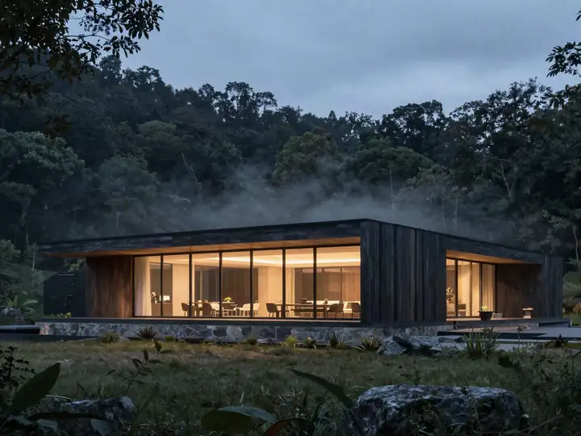
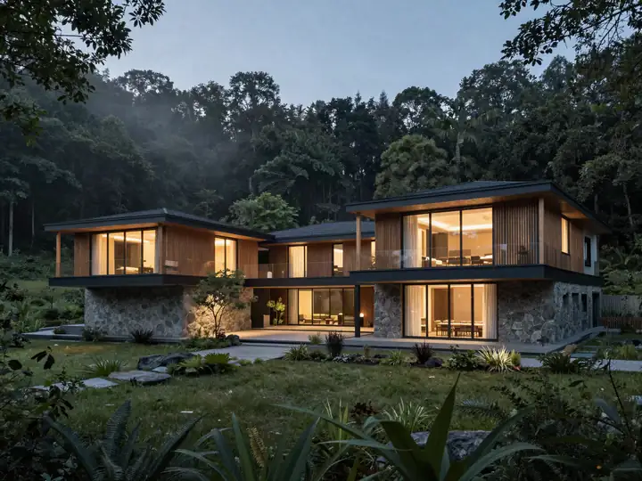
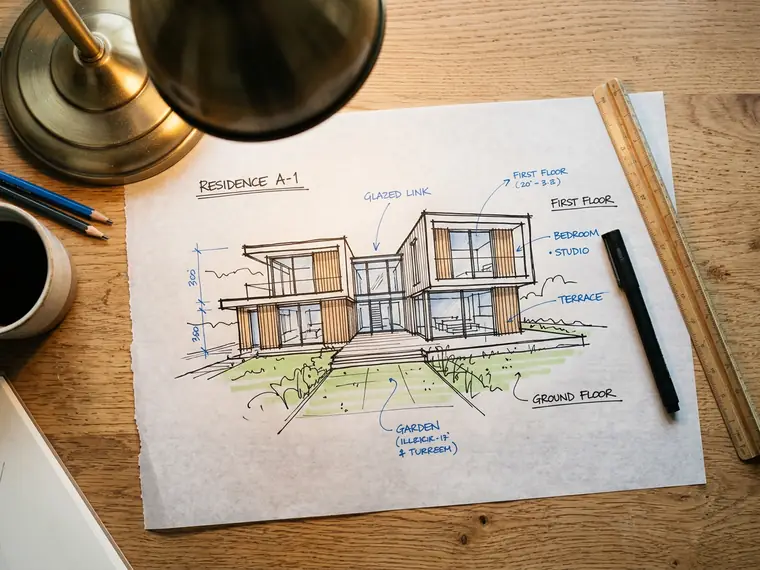
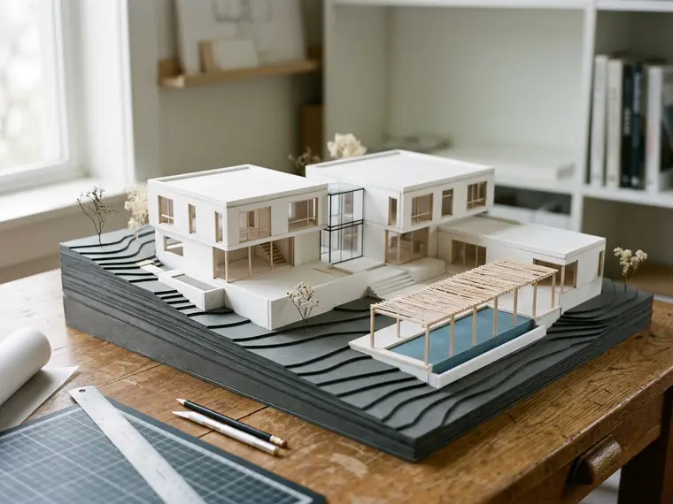

01
대지가 읽힌다.
내집코드의 대지 카드가 그대로 넘어옵니다. 향, 접근, 주변 높이, 한도.
02
키워드 세 개.
공원, 틈, 테라스. 당신이 떠올린 단어가 방향의 씨앗입니다.
03
세 갈래가 나온다.
각각 한 줄 문장, 매스 스케치, 핵심 수 세 개, 참고 건물 둘. 왜 이 땅에 맞는지까지.
04
고르면 컨셉 보드.
고른 안이 도면·모형·패널의 출발점이 되고, 스타일 프로필에 기록됩니다.
땅이 있다면 주소부터, 아직 없다면 취향부터. 지을 집이 보이면 건축사·시공사 상담까지 이어 드릴게요.
방 하나만 바꾸고 싶다면 — 내 방 고치기 ›도면이 있다면 — 도면 → 3D(SketchUp) ›

네. 취향 랩, 내집코드, 해와 바람·콘타, 컨셉 장면, 관계 다이어그램, 모형·법규 볼륨, 패널 진단, 건축 여행은 로그인 없이 쓸 수 있어요. 로그인하면 작업이 자동 저장되고 다른 기기에서 이어집니다.
물론이에요. “모두의 건축”이라는 이름처럼, 집을 짓고 싶은 사람·건축을 보러 다니는 사람 누구나 쓰도록 만들었어요. 어려운 용어에는 풀이가 붙어 있어요.
아니요. 건폐율·용적률·정북 일조 사선은 개략 검토예요. 지구단위계획과 지자체 조례에 따라 달라지니, 실제 설계·허가 전에는 건축사와 관할 관청에서 꼭 확인하세요.
사진은 Wikimedia Commons의 자유 라이선스 사진이고, 각 사진의 ⓘ에 작가와 라이선스가 있어요. 별점은 ZIPLAN 에디터의 주관 평가이고, 방문자 별점은 회원이 직접 남긴 점수의 평균이에요.
작업은 로그인한 본인만 볼 수 있어요. 건축 여행의 위치는 브라우저 안에서만 쓰고 저장하지 않아요. 방문 통계는 쿠키 없이 익명으로만 모읍니다. 자세한 건 개인정보처리방침을 봐 주세요.
네 가지만 고르면 일정마다 '잘 맞음 · 맞음 · 참고'를 붙여 드려요. 고른 것은 이 기기에만 저장돼요.
요약은 ZIPLAN이 원문을 읽고 쓴 것이에요. 지원·참석 전에는 꼭 원문을 확인하세요.
그림은 종목을 나타내는 ZIPLAN 그림이고, 공모·행사의 실제 포스터나 작품이 아니에요. '비슷한 건물'은 같은 쓰임의 참고 건물입니다. ZIPLAN은 공모·행사의 주최가 아니며 일정 변경에 책임지지 않습니다. 잘못된 정보는 문의하기로 알려 주세요. 3일마다 새로 확인합니다.
학교 메일 하나로 30초. 졸업 전까지 매년 한 번만 다시 확인합니다.
—
내집코드의 대지 카드가 그대로 넘어옵니다. 향, 접근, 주변 높이, 한도.
공원, 틈, 테라스. 당신이 떠올린 단어가 방향의 씨앗입니다.
각각 한 줄 문장, 매스 스케치, 핵심 수 세 개, 참고 건물 둘. 왜 이 땅에 맞는지까지.
고른 안이 도면·모형·패널의 출발점이 되고, 스타일 프로필에 기록됩니다.
실명, 면적, 구분, 인접. 한 줄에 하나. 엑셀에서 붙여 넣어도 됩니다.
대지 안에 면적만큼의 블록. 공용은 공원 쪽, 전용은 도로 쪽.
붙어야 하는 실끼리 선으로. AI 조닝은 이 관계를 읽어 위치를 다시 정합니다.
층고만 넣으면 단면 다이어그램. SVG로 CAD에서 이어 그립니다.
층마다 바닥면적과 용도. 건물이 옆에서 본 모양으로 쌓입니다.
건폐율·용적률을 한도에 대고 남은 면적을 알려줍니다. 초과면 빨간색.
면적이 덩어리가 되어 네 방향에서 돌려 봅니다. 테라스가 어디서 물러나는지 보입니다.
같은 연면적, 다른 세 덩어리. 고르면 도면과 패널이 따라갑니다.
| 층 | 바닥면적 ㎡ | 용도 |
|---|
상단 60%를 대표 이미지에 내주고, 도면은 아래 띠로 받칩니다.
긴 단면이 하단을 가로지르고, 같은 축척의 평면이 위에 정렬됩니다.
형태 생성 논리를 네 컷으로 먼저, 그다음 도면.
6×5 균등 그리드와 하단 타이틀 바.
풀블리드 히어로가 먼저 말하고, 다이어그램 세 컷이 이유를 댑니다.
가운데 분해 액소가 집의 켜를 보여주고, 도면이 둘레를 받칩니다.
한 장면과 넓은 여백, 바닥의 타이틀 바. 전시형 패널에.
건축은 어렵습니다. 땅을 읽는 법, 법규의 숫자, 도면의 선, 패널 한 장. 배워야 할 것이 많고 시간은 늘 모자랍니다.
ZIPLAN은 그 시간을 돌려주는 작업대입니다. 표현과 정보와 시각자료는 AI가 압도적으로 빠릅니다. 그 부분을 AI에 맡기고, 사람은 보고, 고르고, 결정합니다.
좋은 건축가는 많은 건물을 보고 배웁니다. ZIPLAN은 하나의 답 대신 세 개의 대안을 내고, 당신이 고른 것을 기억합니다. 고를수록 당신을 닮아 갑니다.
내리면, 한 장씩 넘어갑니다.

말뚝과 실로, 집이 앉을 자리를 먼저 그린다.

트레이싱지 위에 한 줄 — 방들의 자리를 동그라미로.

동그라미가 벽이 된다. 안마당을 감싸는 한 겹의 집.

같은 땅에 세 개의 덩어리. 고르는 건 당신.

돌과 유리의 비율을, 손으로 들어 확인한다.

선이 콘크리트가 되고, 그림자가 생긴다.

저녁, 계곡 쪽 유리에 불이 든다.
주소 하나로 용도지역·건폐율·용적률을 읽고, 한 줄 — "숲 앞 경사지, 4인 가족, 돌과 유리" — 과 키워드로 방향을 정합니다. 이 한 줄이 아래 모든 그림의 재료가 됩니다.
같은 땅에 세 가지 답 — A 길게 낮게(조망), B 두 동과 마당(프라이버시), C ㄱ자 안마당(바람막이). 각각 한 줄 이유, 참고 건물, 대략의 면적과 층수가 붙습니다.
고르면 그 선택이 스타일 프로필(수평성·재료 대비·개방감…)에 쌓입니다. 다음에 내는 대안은 이 프로필을 반영해 점점 당신을 닮아 갑니다. 결정은 언제나 당신의 것입니다.
고른 매스가 1층 평면·단면이 되고, 사진과 함께 A1 한 장에 자리 잡습니다. PNG·SVG·PDF로 내려받아 크릿에 들고 가고, 포트폴리오에는 그대로 한 페이지가 됩니다.
 SITE
SITE북쪽은 숲, 남쪽은 길. 내집코드가 읽어 준 땅 위에 한 줄을 올립니다.

A✓경사를 따라 길게 눕히고, 골짜기 쪽을 전면 유리로. 조망이 먼저인 집.

B✓두 덩어리 사이에 마당을 두고 유리로 잇습니다. 프라이버시가 먼저인 집.
C✓ㄱ자로 안마당을 감싸 바람을 막고, 안쪽만 엽니다. 바람막이가 먼저인 집.

한 줄과 지도 위 몇 개의 선. 내집코드가 읽어 준 땅 위에 첫 생각을 올립니다.

세 개의 매스 중 하나를 고르면 도면이 됩니다. 도면은 손으로 들어 볼 때 비로소 집이 됩니다.
A1 한 장에 과정이 담깁니다. 광장에 올리면 다른 사람의 눈이 더해집니다.
보고, 다니고, 읽는다. 전부 무료.
취향으로 시작해 땅을 읽고, 지을 집이 보이면 상담까지.
설계 흐름 한 화면, 그리고 대지 → 컨셉 → 도면 → 모형 → 패널 → 포트폴리오.
올리고, 묻고, 내 것은 모아 둔다.
고를수록, 집이 지어집니다.
마음이 가는 건축 단어를 누르세요. 단어마다 재료 · 창 · 지붕 · 덩어리 · 대지로 번역되어, 옆에서 집 한 채가 바로 자라납니다.
단어에 마우스를 올리면 모형에서 무엇이 바뀌는지 보여 줘요. 다섯 개 이상이면 방향이 선명해집니다.
저장하고, 이어서, 함께.
프로젝트마다 일곱 단계가 이어집니다. 지금 어디쯤인지, 다음은 무엇인지 여기서.
천 년 전 목조 건축부터 거장의 콘크리트까지. 사진으로 고르고, 지도에서 찾고, 코스로 묶으세요.
MZ 포토 스팟, 방학 해외 답사, 한옥 정석, 빛·물·밤… 하나를 누르면 아래 지도와 목록이 그 테마로 바뀌고, 코스도 한 번에 짜져요.
인스타그램·유튜브·관광 통계에 자주 오르는 곳 중 건축으로 볼 만한 스팟만 골라, 계절별로 묶었어요. 출처와 기준일은 카드 아래에.
위치를 허락하거나 출발역을 고르면, 거리와 평가를 함께 따져 AI가 하루 코스를 짜고 소개 글까지 써 드려요.
거리는 직선거리, 이동 시간은 자동차 기준 어림값이에요.
별점은 ZIPLAN 에디터가 공간·빛·재료·찾아가기로 매긴 주관 평가예요. 다녀오셨다면 카드의 별을 눌러 직접 남겨 주세요.
가까운 곳끼리 잇고, 점심을 끼우고, 하루 일곱 시간 안에서 자릅니다. 카드의 “코스에 넣기”로 꼭 갈 곳을 고정할 수 있어요.
도쿄·교토·세토우치·베이징·타이베이·상하이·홍콩·싱가포르. 항공권 시세와 물가, 비자, 휴관일, 하루 코스까지 — 방학 답사에 필요한 것을 한 장에 모았어요.
출발 전 체크리스트(저장됨), 지역별 예산, 답사 짐, 언제 가면 좋은지, 쓸 앱, 답사 매너까지.
문 앞이 아니라 주차장에서부터 건축이 시작됩니다. 뮤지엄 산과 유민미술관은 걷는 길이 반이에요.
같은 건물도 오전·해 질 녘이 다릅니다. 동향·서향을 미리 보고 시간을 맞추세요.
병산서원 만대루, 종묘 월대 끝. 오래 머무는 자리에서 건축이 풍경을 어떻게 자르는지 보입니다.
송판 무늬, 벽돌 줄눈, 기와의 겹. 사진에 안 담기는 것은 손끝 거리에서 보입니다.
평면 한 장을 기억으로 그려 보세요. 동선을 다시 그리면 설계가 보입니다.
사진: Wikimedia Commons의 자유 라이선스 사진(각 사진의 ⓘ에 작가·라이선스). 지도: © OpenStreetMap 기여자. 운영 시간·휴관일·예약 여부는 방문 전 각 기관에서 확인하세요.
claude.ai 안에서 열면 그 계정으로 자동 로그인됩니다. 내 작업실에서 저장·불러오기. 올린 사진은 용량 때문에 이 브라우저에만 남습니다. 정식 서비스에서는 이메일 로그인과 결제가 들어갑니다.
AI는 대안을 내고, 문장을 다듬고, 블록을 놓고, 면적을 검토합니다. 설계를 대신하지 않고 법규를 단정하지 않습니다. 결과는 언제나 사람이 고칩니다.